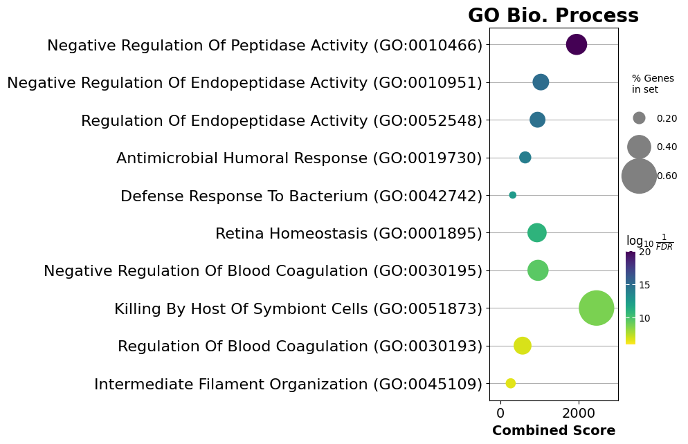

Pathway Analysis
Using DPKS it is possible to perform pathway analysis using proteins selected from differential abundance analysis or
by using explainable machine learning. We use the methods available in the awesome GSEAPY1
package to perform overrepresentation tests using hypergeometric distributions on the protein in your QuantMatrix.
Note
This is one of the few methods in a QuantMatrix that does not return an instance of itself to allow for method
chaining. Instead, the results of the overrepresentation tests from GSEAPY are returned.
Info
We are working on adding support for GSEA analysis directly from a QuantMatrix
Basic usage of the enrich() method is as follows:
By default, the GO_Biological_Process_2023 is searched if none are indicated using the libraries parameter.
For filtering at the FDR level after differential abundance analysis:
enr = qm.enrich(
method="overreptest",
filter_pvalue=True,
pvalue_column="CorrectedPValue2-1",
pvalue_cutoff=0.1
)
For filtering SHAP values that have some contribution to prediction:
enr = qm.enrich(
method="overreptest",
filter_shap=True,
shap_column="MeanSHAP2-1",
shap_cutoff=0.0
)
You can also search multiple libraries and subset the databases to only consider pathways that contain the proteins in
your QuantMatrix. All pathways available in GSEAPY can be searched.
Tip
If you have a small number of proteins you are interested in, subsetting the library using the subset_library
parameter can be very helpful. This can help with FDR control so that the search space is not too large.
enr = quantified_data.enrich(
method="enrichr_overreptest",
libraries=['GO_Biological_Process_2023', 'KEGG_2021_Human', 'Reactome_2022'],
organism="human",
filter_pvalue=True,
subset_library=True
)
The above enr results are detailed in the GSEAPY documentation, and can be used to easily make pathway plots and
perform network analysis.

Example
There is a jupyter notebook with some detailed examples of how to use this functionality and some possible plots.
Pathway Enrichment: Demonstrates how to perform pathway enrichment analysis.
-
Zhuoqing Fang, Xinyuan Liu, Gary Peltz, GSEApy: a comprehensive package for performing gene set enrichment analysis in Python, Bioinformatics, 2022;, btac757, https://doi.org/10.1093/bioinformatics/btac757 ↩